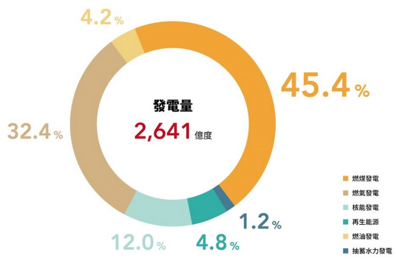

煤炭是最污染環境的發電方式，正嚴重威脅著我們的氣候。
煤炭是最污染環境的發電方式，正嚴重威脅著我們的氣候。燃燒煤炭為人類活動中最大的二氧化碳排放單一來源，開採煤炭也釋放出強大的溫室氣體甲烷。然而，煤炭自2003年以來一直是全球電力的主要來源。我們必須擺脫這骯髒、污染環境的煤炭。好消息是，全世界已經開始改變！煤炭正在急遽地衰落，而潔淨、安全的再生能源則勢不可擋地成長。但我們仍必須加快腳步，阻止氣候危機。
問題：煤炭促成氣候暖化
煤炭主要成分為碳，讓它成為碳密集的發電來源。同樣的發電量下，燃燒煤炭產生的溫室氣體排放量近乎是燃燒天然氣的兩倍。
所以全球電力業有73%的碳排即是來自燃煤發電。
燃煤發電單位碳排量是天然氣的近 2 倍，更是再生能源的 17 倍以上。
一座標準的 50 萬瓩燃煤電廠所產生的全球暖化氣體，約等於 600,000 輛汽車的排放量。然而，燃煤電廠與汽車不同的是，其設計的運轉時間長達 40 年以上，可說是長壽的污染能源。
開採煤炭常常產生強大的溫室氣體甲烷。甲烷與二氧化碳相較，20年間其擾亂氣候的能力高達 84 倍。
煤炭的骯髒計畫──必須面對的挑戰
自2010至2014年間，全球新啟用的燃煤電廠裝置容量 ，換算下來每日平均達20萬瓩之多，更進一步加劇了氣候變遷。若全球各地的燃煤電廠新建計畫都按照預定進行，到 2030 年，使用煤炭的二氧化碳排放量將繼續衝高，佔全球排放量的 60%。
目前所知的全球煤炭礦藏可供我們再燃燒110年以上。但這種骯髒、污染的燃料，即使是開採及燃燒一小部分，都將讓全球升溫攝氏控制在1.5度內的目標失守。一旦暖化程度超過這個門檻，部分地區將面臨嚴峻的氣候變遷衝擊。

2016年臺灣發電佔比。其中燃煤發電就佔了近半，高達45.4%。
澳洲、中國、印度、波蘭及南非等許多國家使用煤炭來供給三分之二的電力及暖氣。南非有 92% 的電力來自於煤炭，且計畫在2030年前再增加1,640萬瓩的裝置容量。
煤炭已是夕陽產業
煤炭可說是大勢已去。2015 年的巴黎氣候協定清楚表明，化石燃料的時代──特別是煤炭──即將結束。全球各地都可見到煤炭產業急遽衰落，一去不復返。
- 中國：曾佔了一半的煤炭總需求量，2014年中國的煤炭消耗量持平，接著迅速下跌。在中國能源轉型的背後，是與污染的戰爭、再生能源的成長及經濟的再平衡。
- 越南：儘管過去東南亞的開發計畫高度倚賴煤炭，越南於2016年決定擱置70座大型燃煤電場興建計畫，也顯示出逐漸轉向潔淨能源的趨勢。
- 美國：煤炭開採量已降至30年來的最低點。數十家煤礦開採公司聲請破產，包括包括皮博迪能源公司 （Peabody Energy），全球最大的私人煤礦開採公司。
- 歐盟：煤炭消費量自2012年中便已下滑，英國致力於在2025年前淘汰煤炭。
- 印度：儘管印度的煤炭開採量急遽增加，其最終只是進到倉庫。水源短缺導致部分發電廠關閉。印度有名列全世界污染最嚴重的四座城市，隨著環境意識逐漸抬頭，也必得處理燃煤發電的傷害。
我們必須完全擺脫煤炭
煤炭產業希望我們認為自己需要這樣骯髒的燃料來滿足不斷成長的能源需求，但這並非事實。
綠色和平具公信力的
《能源革命報告》指出，我們可以透過提升能源效率及轉向100%
再生能源來滿足我們的能源需求。
全世界已經走在改變的路上。運用太陽能、風力及其他安全而有保障的潔淨能源，已成為勢不可擋的趨勢。
我們必須立刻擺脫煤炭。要阻止毀滅性的氣候變遷，就必須盡速轉向 100% 的再生能源。
綠色和平如何打擊煤炭
在全球各地，綠色和平正在倡議關閉燃煤電廠，並阻止新煤電廠建立。
協助社區擺脫煤炭，我們一直在做的包括：
- 強調煤炭對健康的不利影響。
- 支持那些因發電廠建設而被逐出自己土地的農人。
- 倡議並發起行動，阻止資金流向煤炭與其他化石燃料計畫。
綠色和平也提倡潔淨的再生能源及其他氣候變遷的解決方案，同時致力打破迷思，像是昂貴且不切實際的
碳捕捉及封存。
您也可以做的事